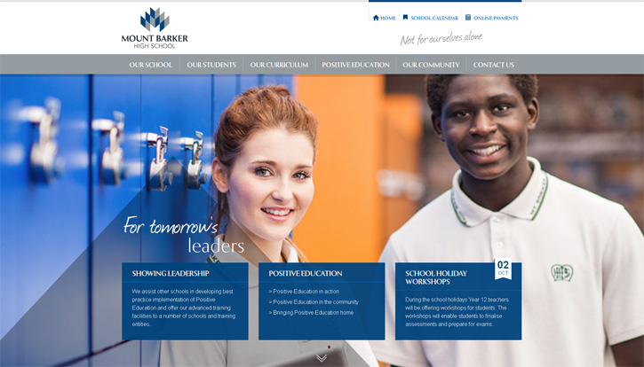
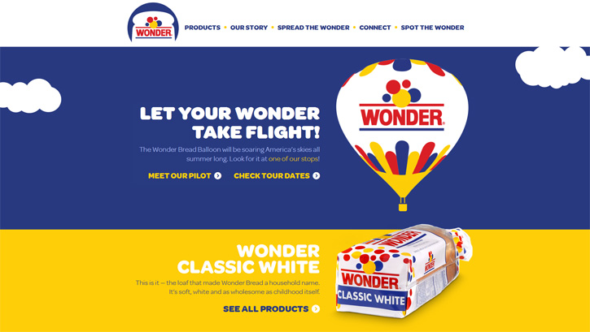
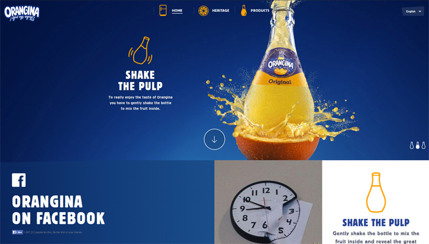
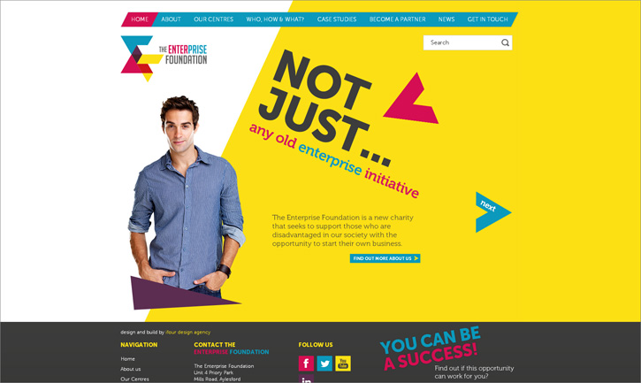
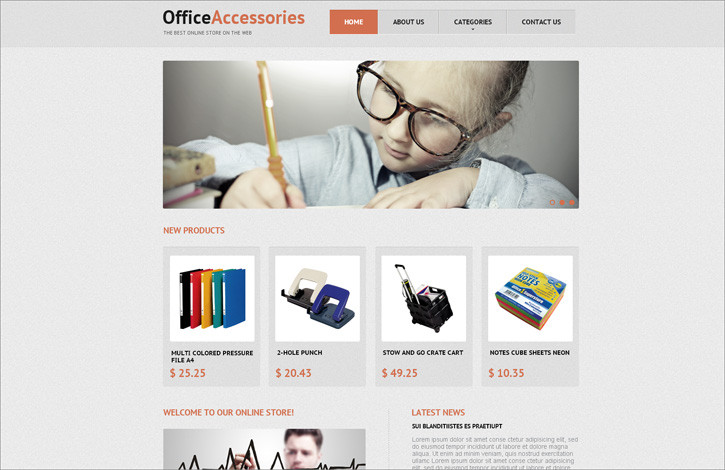
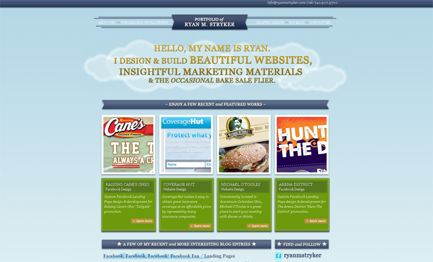

版式设计入门篇！四个超实用的网页设计构图原则
任何平面设计都离不开排版，四个经典构图原则帮你入门版式设计！今天聊一聊常见的几类构图方式：对称平衡、不对称平衡、水平平衡以及垂直平衡，有分析有案例，强烈推荐学习，童鞋们快来感受一下吧！
对称平衡
如果你想在你的网页看上去美观和优雅，那么你应该做一个网站对称。这种效果很容易通过将类似的对象上的中心轴线的任一侧来实现。这可以通过相同的尺寸，基于网格的文本段落，或具有匹配文本相片的图像进行说明。这里有一对遵循这一格式的网站设计实例。
 您可以轻松地在网上找到各地的许多中心的布局，实际上，对称性设计被认为是最赏心悦目的设计。这也是大多数人的典型思维模式。 当然，当你准备采用对称性设计的时候，更多的时候它并没有你想象中那么肤浅简单。考虑到这点，你不妨以平面配色方案开始。如果你是新手，可以尽量多运用白色，直到你有足够的能力创造你自己的设计。 毕竟这样的设计最赏心悦目，所以大多数人都喜欢干净简洁并且完美对称的网页。但是更多别出心裁的设计师会采用一些更加新颖的一些更复杂的设计布局。
不对称平衡
不对称平衡带来一种自由随意的感觉。尽管有时候看上去不是那么自然，但是它还是经常在网页设计中得到实用。你可以看到不对称平衡常常运用在一些大的高清图片作为页面背景，主体远离了中心轴线的情况，目的是为了把更醒目的标题留在中间。
 它的设计的主要目的是移位到左边或右边（或顶部或底部）。因此，如果您决定要用不对称功能，你应该准备好多次的试验，以避免混淆网站的访问者。 无论什么类型的对称，核心就是你要让整体平衡。
水平平衡
水平平衡是网页最经典的页面布局。大部分人都习惯从左向右阅读，所以左右布局也是最自然的一种布局方式。
这是最经典的一种布局设计，如果你的客户比较传统，那么你的设计也应该简单明了。这里有个案例。
垂直平衡
垂直结构用于头部和底部的元素非常相似的情形。这样的布局往往运用于小图片的展示，比如下面的例子：
结论
平衡是网页设计中最重要也是最容易忽略的东西。视觉上的平衡可以通过对界面元素的布局来调和，比如选择最合适的配合，元素的大小和位置。有的时候，也需要大胆创新，不要拘泥于传统。